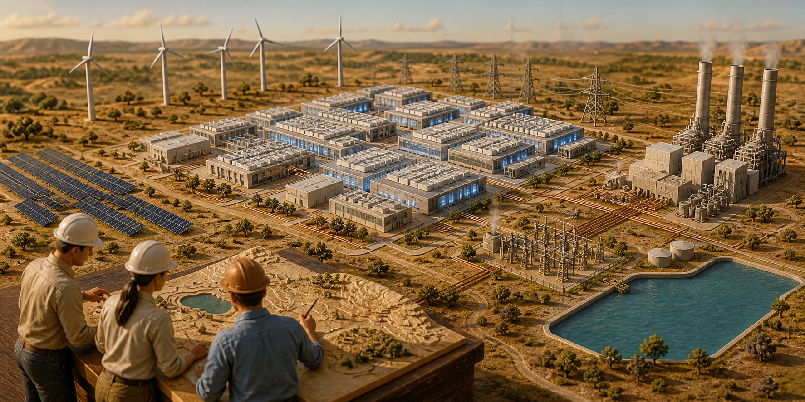

AI infrastructure · 2026.08.09
아마존, 발전소까지 붙인 텍사스 초대형 AI 데이터센터 부지 인수
아마존이 서버 건물뿐 아니라 전기를 만들 발전소까지 함께 짓도록 허가받은 텍사스 부지 ‘GW Ranch’를 인수했다. 최대 7.65GW의 가스발전을 추진할 수 있는 곳이다. 공용 전력망을 기다리지 않고 AI 서버를 늘릴 수 있지만, 그만큼 탄소와 대기오염 책임도 아마존 가까이 다가온다.

아마존은 미국 텍사스주 퍼코스 카운티의 초대형 데이터센터 부지 GW Ranch를 인수했다고 확인했다. 에너지 개발사 Pacifico Energy가 이곳에 가스발전소와 배터리, 태양광을 짓고 데이터센터에 직접 전기를 보내는 계획을 추진해 왔다. 뉴욕타임스가 8월 8일 인수 사실을 보도했고, TechCrunch도 뒤이어 확인했다.
GW Ranch는 일반적인 서버 건물 부지가 아니다. 프로젝트가 신청한 가스발전 용량은 최대 7.65기가와트(GW)로, 원전 여러 기의 출력과 맞먹는다. 아마존은 전력회사가 전기를 보내 줄 때까지 기다리는 대신 거대한 발전 설비를 AI 서버 옆에 둘 수 있는 땅을 산 것이다.
허가 문서에는 연간 최대 3,320만 톤의 이산화탄소환산량(CO₂e)도 적혀 있다. 하지만 현재 그만큼 배출한다는 뜻도, 아마존이 그만큼 배출하겠다고 확정했다는 뜻도 아니다. Environmental Integrity Project가 텍사스 허가를 정리한 보고서와 미 상원 환경·공공사업위원회 서한에 나온 최대 허용치다. 실제 배출량은 최종 발전소 크기와 가동 시간, 터빈 효율에 따라 달라진다.
이미 끝난 일과 앞으로 할 일을 나눠 봐야 한다
확인된 일은 아마존이 8,000에이커가 넘는 부지를 인수했다는 사실이다. Pacifico의 프로젝트 설명에는 7.65GW 가스발전, 최대 1.8GW 배터리 저장장치, 750메가와트(교류 기준)의 태양광 계획이 나온다. 첫 전력은 2027년 1분기, 1GW는 2028년, 5GW 이상은 2031년에 공급한다는 목표다. 아직 발전소가 완공됐거나 이 일정이 확정된 것은 아니다.
GW Ranch를 읽는 세 층
같은 프로젝트의 숫자라도 확정 수준과 의미가 다르다.
확인된 사건
AmazonGW Ranch 부지 인수를 회사가 확인했다. 세부 계약 조건은 공개되지 않았다.
소유권 변화허가의 최대치
7.65GW가스발전 허가 용량. 연 3,320만 톤 CO₂e 역시 최대 가동을 가정한 상한이다.
실제 배출량 아님개발사 계획
2027→312027년 첫 전력, 2028년 1GW, 2031년 5GW 이상을 단계적으로 추진한다.
향후 변경 가능아마존이 땅을 산 뒤 계획을 바꿀 수도 있다. 데이터센터의 최종 면적과 가스 터빈의 회사·기종·설치 대수, 배터리가 전기를 내보낼 수 있는 시간, 태양광 공사 순서, 탄소포집 여부는 공개 자료만으로 알 수 없다. 아마존이 기존 허가를 그대로 쓸지, 단계마다 변경할지도 아직 정해지지 않았다.
그래도 인수의 뜻은 분명하다. 아마존은 데이터센터를 먼저 짓고 공용 전력망 연결을 기다리는 대신, 발전 허가와 가스 공급 조건을 갖춘 땅부터 확보했다. 이제 AI 경쟁에서는 GPU뿐 아니라 전기를 얼마나 빨리 구하느냐도 중요해졌다.
연 3,320만 톤은 현재 배출량이 아니다
배출 허가 상한은 발전소가 최대로 돌아갈 때 얼마나 많은 오염을 허용할지 규제기관이 검토한 숫자다. 발전소가 완성되기도 전에 그만큼 배출하고 있다는 뜻은 아니다. 그렇다고 무시할 수도 없다. 사업자가 처음부터 얼마나 큰 발전소를 염두에 뒀는지 보여 주기 때문이다.
연 3,320만 톤 CO₂e는 환경단체가 정리한 계획들 가운데서도 큰 값이다. Texas Tribune의 7월 조사는 텍사스에서 데이터센터 전용 가스발전소의 허가상 배출량이 빠르게 늘고 있다고 보도했다. 그러나 계획이 취소되거나 줄어들 수 있고, 모든 발전소가 동시에 최대 출력으로 돌아갈 가능성도 낮다. 계획 속 최대치를 현재 배출량으로 바꾸어 말하면 안 된다.
실제 기후 영향을 계산하려면 네 가지를 더 알아야 한다. 몇 GW의 가스발전소가 완공됐는지, 1년에 얼마나 자주 돌았는지, 터빈이 얼마나 효율적인지, 가스를 생산하고 운반할 때 메탄이 얼마나 샜는지다. 태양광 발전량과 배터리 사용량, 탄소포집 설비가 생긴다면 실제 포집률도 더해야 한다.
발전소 주변 주민에게는 탄소와 대기오염이 다른 문제다. 상원 서한과 환경단체 자료는 질소산화물, 일산화탄소, 휘발성유기화합물 같은 물질도 나올 수 있다고 지적한다. 온실가스는 세계 기후에 쌓이고, 대기오염물질은 가까운 지역의 건강에 더 직접적인 영향을 줄 수 있다.
아마존의 기후 약속과 AI 서버 증설은 함께 갈 수 있을까
아마존은 2040년까지 온실가스 순배출을 0으로 만들겠다는 Climate Pledge를 유지하고 있다. 이를 위해 재생에너지 구매와 전기차, 저탄소 건축재, 에너지 효율 개선을 늘려 왔다. GW Ranch에서 가스발전을 얼마나 쓸지는 이 약속과 직접 연결된다.
아마존은 최신 지속가능성 보고에서 2025년 탄소발자국이 전년보다 16% 늘었다고 밝혔다. 아마존의 보고서 페이지와 TechCrunch의 7월 분석은 데이터센터와 연료, 공급망 확대가 배출 증가의 배경임을 보여 준다. GW Ranch 하나가 증가분 전체를 만들었다는 뜻은 아니지만, AI 서버를 빠르게 늘리면서 기후 목표도 지키기는 더 어려워졌다.
재생에너지를 얼마나 샀는지만으로는 부족하다. 다른 지역의 풍력·태양광 계약으로 연간 전력 사용량을 맞춰도, 텍사스 현장의 가스발전기가 밤낮으로 돌아간다면 그 시간의 AI 서버는 화석연료 전기를 쓴다. 기업이 100% 재생에너지를 샀다고 발표해도 실제 전력의 탄소 배출은 높을 수 있다.
아마존은 실제로 설치할 가스 터빈의 용량과 공사 단계, 예상 가동률, 태양광·배터리의 에너지 용량을 공개해야 한다. 가스 생산에서 나오는 메탄과 탄소포집 여부, 이 부지의 배출을 회사 전체 목표에 어떻게 넣을지도 필요하다. 지금은 이곳이 미국 최대 오염원이 될지, 저탄소 AI 캠퍼스가 될지 어느 쪽도 확정할 수 없다.
공용 전력망을 피해도 가스와 오염은 남는다
Pacifico는 GW Ranch가 텍사스 공용 전력망 ERCOT를 거의 쓰지 않는 ‘behind-the-meter’ 시설이라고 설명한다. 쉽게 말해 현장 발전소가 서버에 직접 전기를 보내는 설계다. 그러면 대규모 전력망 연결을 기다리는 시간을 줄이고, 일반 가정과 기업이 쓰는 송전선에 새 부담을 덜 수 있다.
하지만 전력망에서 떨어져 있다고 에너지 문제까지 사라지는 것은 아니다. 발전소에는 천연가스 파이프라인이 필요하고, 가스를 태우면 이산화탄소와 질소산화물이 나온다. Texas Tribune의 2월 현장 보도는 7.65GW 전체가 돌아갈 경우 하루 10억~20억 입방피트의 가스가 필요할 수 있다는 연구자 계산을 소개했다. 최대 가동을 가정한 추정치이며 실제 수요가 확정된 것은 아니다.
전력 독립의 경계선
계통 접속 문제를 줄여도 에너지와 환경 비용은 다른 경로로 남는다.
줄일 수 있는 병목
- 대규모 ERCOT 계통 접속 대기
- 외부 송전선 증설 의존도
- 계통 피크 시간의 직접 부하
다른 곳으로 이동하는 부담
- 천연가스 공급망과 가격 노출
- 현장 온실가스·대기오염 배출
- 대규모 설비의 좌초·가동률 위험
따라서 가정용 전기요금과 기후 영향은 따로 물어야 한다. GW Ranch가 공용 전력망의 전기를 거의 쓰지 않으면 일반 이용자의 부담은 제한될 수 있다. 그래도 현장 가스발전소가 오래 돌아가면 직접 배출은 커진다. 전기요금에 부담을 주지 않는다고 해서 탄소 부담도 작아지는 것은 아니다.
1.8GW 배터리와 750MW 태양광도 숫자만으로 효과를 판단할 수 없다. GW는 한순간에 낼 수 있는 출력이고, 배터리가 몇 시간 버티는지는 기가와트시(GWh)를 알아야 한다. 태양광은 낮에 가스 사용을 줄일 수 있지만 7.65GW 가스발전을 대신할 규모는 아니다. 최종 설비와 1년 발전량이 공개돼야 실제 감축 효과를 계산할 수 있다.
한국에서 AI 서비스를 만들 때도 전기부터 물어야 한다
한국에서는 텍사스처럼 가스전 옆 넓은 땅에 사설 발전소를 붙이기 어렵다. 국토와 전력 제도가 다르기 때문이다. 그래도 GW Ranch가 던지는 질문은 같다. AI 서비스의 가격과 탄소 배출은 모델 코드뿐 아니라 데이터센터가 어디에 있고 어떤 전기를 쓰는지에 따라 크게 달라진다.
국내 클라우드·통신·플랫폼 회사는 GPU 대수와 함께 전기를 언제 받을 수 있는지 확인해야 한다. 전력망 연결 기간과 지역별 여유 전력, 시간대별 무탄소 전력, 비상발전기 허가, 냉각수 부족이 모두 공사 일정에 영향을 준다. 대규모 AI 학습을 전기가 싸고 깨끗한 시간으로 옮기는 소프트웨어도 더 중요해질 수 있다.
AI 서비스를 사는 기업도 공급사의 연간 재생에너지 비율만 보면 안 된다. 내 작업이 실제로 처리되는 지역과 그 시간의 전력원, 현장 가스발전 사용 여부를 물어야 한다. 같은 API를 호출해도 어느 데이터센터에서 답을 만들었는지에 따라 배출량이 달라질 수 있다.
개발자는 더 작은 모델과 캐시, 여러 요청을 묶는 배치 추론, 계산량을 줄이는 양자화로 전력 사용을 낮출 수 있다. 그러면 API 비용뿐 아니라 냉각과 최대 전력 부담도 줄어든다. 다만 개발자의 코드 최적화만으로 기업이 가스발전소를 짓는 결정을 대신할 수는 없다.
다음에는 허가증보다 실제 공사와 가동 기록을 봐야 한다
첫째, 아마존이 텍사스 환경품질위원회에 내는 허가 변경 문서를 봐야 한다. 운영 회사나 터빈 구성이 바뀌고 발전 용량이 줄면 배출 상한도 달라질 수 있다. 반대로 7.65GW 허가를 유지한 채 장비를 주문한다면 계획이 실제 공사에 가까워진다.
둘째, 현장 공사와 전력 공급 날짜를 확인해야 한다. 개발사가 제시한 2027년 1분기 첫 전력은 빠른 목표다. 가스관 연결과 터빈 납품, 서버 건물 공사, 환경 조건 이행 중 하나만 늦어져도 전체 일정이 밀린다. 발표 자료의 연도보다 착공과 장비 반입, 단계별 상업운전 날짜가 더 믿을 만하다.
셋째, 월별 가스 사용량과 실제 배출량이 필요하다. 허가상 최대치만으로는 서버와 발전소가 얼마나 자주 전력을 많이 썼는지 알 수 없다. 아마존이 부지별 전력원과 배출량을 공개하고 규제기관 자료가 쌓여야 기후 영향을 검증할 수 있다.
넷째, 공용 전력망과 지역사회에 대한 약속을 지키는지 봐야 한다. 실제 운영 때 ERCOT 전기를 얼마나 쓰는지, 비상시에 전력을 주고받는지, 지역 대기질을 어떻게 측정하고 주민에게 알리는지 확인해야 한다. 물을 외부에서 가져오지 않겠다는 개발사의 주장도 최종 냉각 설비가 공개돼야 검증할 수 있다.
GW Ranch는 AI가 전기를 많이 쓴다는 말을 실제 장면으로 보여 준다. 거대 기술기업이 전력회사를 기다리는 고객에서 벗어나, 발전 허가와 토지까지 직접 확보하고 있다. AI 서버를 빨리 늘릴 수 있는 만큼 어떤 발전소를 택했는지에 대한 책임도 기업이 져야 한다.
현장 발전소는 전력망 연결 대기 문제를 풀 수 있다. 그러나 그 답이 최대 7.65GW 가스발전이라면 실제로 몇 GW를 짓고, 얼마나 자주 돌리며, 어떤 오염을 내는지 계속 확인해야 한다. 태양광과 배터리가 어느 시간에 가스를 대신하는지도 필요하다. 아마존의 부지 인수는 완성된 결론이 아니라 AI를 빠르게 키우는 대가를 추적해야 할 시작이다.
더 읽을 자료
- The New York Times — Amazon’s Texas data-center acquisition and pollution permit
- TechCrunch — Planned Amazon data center and the 33-million-ton permit ceiling
- Pacifico Energy — GW Ranch project description
- Environmental Integrity Project — The Power Behind AI
- The Texas Tribune — Permian Basin power-plant and data-center project
- U.S. Senate EPW Committee — Letter concerning GW Ranch
- Amazon — 2025 Sustainability Report